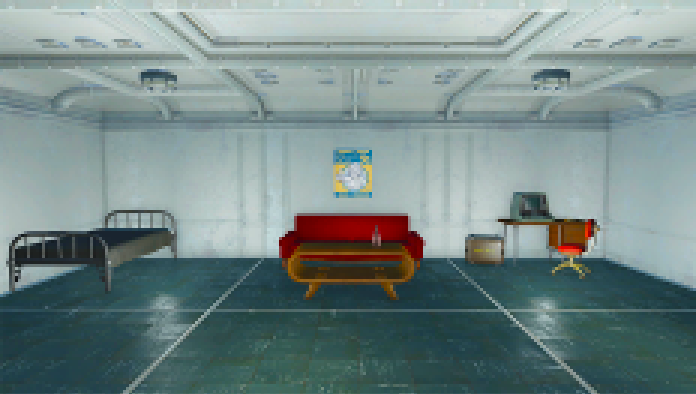

<!DOCTYPE html>
<html lang="en">
<head>
    <meta charset="UTF-8">
    <meta name="viewport" content="width=device-width, initial-scale=1.0">
    <title>Day 1</title>
    <link href="https://fonts.googleapis.com/css2?family=Roboto+Mono:wght@400&display=swap" rel="stylesheet">
    <style>
        body {
            font-family: 'Roboto Mono', monospace;
            background-color: #1a1a1a;
            color: #e0e0e0;
            padding: 20px;
        }
        #game-container {
            max-width: 600px;
            margin: 0 auto;
            background: #333;
            padding: 20px;
            border-radius: 8px;
        }
        button {
            font-family: 'Roboto Mono', monospace;
            display: block;
            width: 100%; /* Optional: makes buttons stretch to the container width */
            background: #005f00;
            color: white;
            border: none;
            padding: 10px;
            border-radius: 5px;
            margin-top: 10px;
            cursor: pointer;
        }
        button:hover {
             background: #008e00;
        }
    </style>
</head>
<body>
    <div id="game-container">
        <div id="game-content"></div>
    </div>

    <script>
        function startGame() {
            const characterName = prompt("Enter your character's name:");
            if (characterName) {
                localStorage.setItem('characterName', characterName);
                showMonologue();
            } else {
                alert("Character name is required. Please refresh and enter a name.");
            }
        }

        function showMonologue() {
            const gameContent = document.getElementById("game-content");
            gameContent.innerHTML = `
                <p>The year is 2267. You are a resident in Vault 51. It performs just like any other vault, you're told. No one in or out, as to stay safe from the wicked wasteland that lies above. Everyone in your vault is very neighborly. You know everyone, and they all know each other. You work as a security officer, ensuring that everyone in the vault is safe and coopertive. But you rarely have to solve any disputes. It's a well oiled machine at this point. You spend most of your days walking your beat around the atrium, and of course, stopping to see Mrs. Vanderbilt in the cafeteria for a sweet treat. There's never a dull moment, or bad day in Vault 51!</p>
                <button onclick="breakfastScene()">Continue</button>
            `;
        }

        function breakfastScene() {
            const gameContent = document.getElementById("game-content");
            gameContent.innerHTML = `
                
                <h1>Day 1</h1>
                <p>You wake up. Time for another great day in the vault! But first, you need to eat breakfast.</p>
                <button onclick="goToSecurityOffice()">Eat breakfast. (Go to work)</button>
            `;
        }

        function goToSecurityOffice() {
            const characterName = localStorage.getItem('characterName');
            const gameContent = document.getElementById("game-content");
            gameContent.innerHTML = `
                <p>Charlie: "Good morning ${characterName}! Say, Toby is feeling a little under the weather today. Do you mind watching his post today? I’d normally take over myself, but I still have paperwork to do after that whole fiasco in the cafeteria yesterday."</p>
                <button onclick="whatsWrongWithToby()">What’s wrong with Toby?</button>
                <button onclick="noProblem()">No problem! (Go to Rations Room)</button>
                <button onclick="doPaperwork()">I can do the paperwork for you if you’d like?</button>
                <button onclick="cafeteria()">What happened in the cafeteria?</button>
            `;
        }

        function cafeteria() {
            const gameContent = document.getElementById("game-content");
            gameContent.innerHTML = `
                <p>Charlie: "You didn't hear? A fight broke out for the last serving of mashed potatoes. I guess those boys were hungry, haha!"</p>
                <button onclick="noProblem()">Glad to hear you're on it. (Go to Rations Room)</button>
                <button onclick="doPaperwork()">I can do the paperwork for you if you’d like?</button>
                <button onclick="whatsWrongWithToby()">What’s wrong with Toby?</button>
                <button onclick="mrsVanderbilt()">Is Mrs. Vanderbilt ok?</button>
            `;
        }

        function mrsVanderbilt() {
            const gameContent = document.getElementById("game-content");
            gameContent.innerHTML = `
                <p>Charlie: "Oh, she's fine. She's tougher than she looks you know?"</p>
                <button onclick="noProblem()">I'm happy to hear that. I'll start heading to my post.(Go to Rations Room)</button>
                <button onclick="doPaperwork()">I can do the paperwork for you if you’d like?</button>
                <button onclick="whatsWrongWithToby()">What’s wrong with Toby?</button>
            `;
        }

        function whatsWrongWithToby() {
            const gameContent = document.getElementById("game-content");
            gameContent.innerHTML = `
                <p>Charlie: "Oh, nothing serious I don’t think. Probably just had too many sweets."</p>
                <button onclick="noProblem()">Just checking. I'll start heading that way. (Go to Rations Room)</button>
                <button onclick="doPaperwork()">I can do the paperwork for you if you’d like?</button>
                <button onclick="cafeteria()">What happened in the cafeteria?</button>
            `;
        }

        function noProblem() {
            const gameContent = document.getElementById("game-content");
            gameContent.innerHTML = `
                <p>Charlie: "Thanks, I really appreciate it!"</p>
                <button onclick="goToRationsRoom()">Continue</button>
            `;
        }

        function doPaperwork() {
            const gameContent = document.getElementById("game-content");
            gameContent.innerHTML = `
                <p>Charlie: "Oh, I wouldn’t want to bore you with all of that. Thank you, though."</p>
                <button onclick="whatsWrongWithToby()">What’s wrong with Toby?</button>
                <button onclick="noProblem()">I'll start heading that way then. (Go to Rations Room)</button>
                <button onclick="cafeteria()">What happened in the cafeteria?</button>
            `;
        }

        function goToRationsRoom() {
            const gameContent = document.getElementById("game-content");
            gameContent.innerHTML = `
                <p>You find yourself in the rations room. The food is made by Mr. Handys in the preparation room next door and later stored here. Only authorized dwellers are allowed back here, and you’ve only ever seen the Overseer go back to the preparation room. He says it’s for our safety and to ensure the food is top quality. How kind of him to look out for everyone!</p>
                <p>You inspect the rations room. Everything looks up to code, except one open box of Sugar Bombs hidden behind a shelf. Looks like Tony was indeed enjoying some extra treats. What do you do?</p>
                <button onclick="leaveThem()">Leave them</button>
                <button onclick="putBack()">Put them back on the shelf</button>
                <button onclick="haveSome()">Have some</button>
            `;
        }

        function putBack() {
    localStorage.setItem('sugarBombs', 'putBack'); // Set the status of Sugar Bombs
    console.log("Sugar Bombs Status: putBack"); // Debug log
    const gameContent = document.getElementById("game-content");
    gameContent.innerHTML = `
        <p>You put the Sugar Bombs back on the shelf. It's been a long boring day. It was easy to lose sense of time as you stood around guarding the room. You tried to strike up a few conversations with the Mr. Handys bringing over finished food, but they didn't have much time to talk.</p>
        <p>You even saw The Overseer pass through. He looked grumpy, as he often does, but keeping this vault running smoothly probably takes its toll.</p>
        <button onclick="checkOnToby()">Clock out</button>
    `;
}

function leaveThem() {
    localStorage.setItem('sugarBombs', 'left'); // Set the status of Sugar Bombs
    console.log("Sugar Bombs Status: left"); // Debug log
    const gameContent = document.getElementById("game-content");
    gameContent.innerHTML = `
        <p>It's been a long boring day. It was easy to lose sense of time as you stood around guarding the room. You tried to strike up a few conversations with the Mr. Handys bringing over finished food, but they didn't have much time to talk.</p>
        <p>You even saw The Overseer pass through. He looked grumpy, as he often does, but keeping this vault running smoothly probably takes its toll.</p>
        <button onclick="checkOnToby()">Clock out</button>
    `;
}

        function haveSome() {
            localStorage.setItem('sugarBombs', 'left'); // Set the status of Sugar Bombs
            console.log("Sugar Bombs Status: left"); // Debug log
            const gameContent = document.getElementById("game-content");
            gameContent.innerHTML = `
                <p>You decide to have some Sugar Bombs. Not much business in the rations room anyway. You find yourself snacking on the Sugar Bombs for quite a while, as it was the only way to pass time while stuck here by yourself. Suddenly, you start feeling strange. The lights are brighter, the air is warmer, and all of your hair stands up as you feel a strange sense of euphoria.</p>
                <button onclick="checkOnToby()">Clock out</button>
            `;
        }

        function checkOnToby() {
    const gameContent = document.getElementById("game-content");
    gameContent.innerHTML = `
        
        <p>You take the long way back to your room so you can stop and check on Toby. As you approach his door you realize that his curtains are closed and his door is locked. 'He must really be under the weather. He’s usually a social butterfly,’ you think to yourself. You notice Kara going to her room next door.</p>
        <button onclick="responseToKara1()">Ask if she's seen Toby</button>
        <button onclick="ignoreKara()">Ignore her and go back to your room</button>
    `;
}

function responseToKara1() {
    const gameContent = document.getElementById("game-content");
    gameContent.innerHTML = `
        
        <p>Kara: "I haven’t seen him all day! I normally run into him in the morning and evening, but his door has been sealed shut since last night."</p>
        <button onclick="endOfDay()">Go back to your room</button>
    `;
}
        function ignoreKara() {
            const gameContent = document.getElementById("game-content");
            gameContent.innerHTML = `
                
                <p>You decide to ignore Kara and head back to your room.</p>
                <button onclick="endOfDay()">Continue</button>
            `;
        }

        function endOfDay() {
            const gameContent = document.getElementById("game-content");
            gameContent.innerHTML = `
                
                <p>After a long day of work, you’re ready for dinner.</p>
                <button onclick="goToDay2B()">Eat dinner</button>
                <button onclick="goToDay2A()">Don’t eat dinner</button>
            `;
        }

        function goToDay2A() {
            window.location.href = 'day2a.html';
        }

        function goToDay2B() {
            window.location.href = 'day2b.html';
        }

        window.onload = startGame;
    </script>
</body>
</html>
